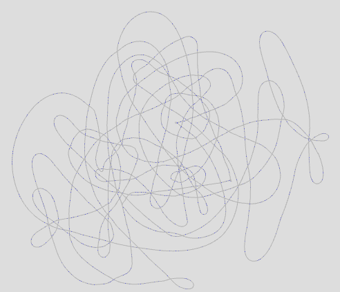

Spaghetti: Visualizing alignments for sequence overlap assembly and scaffolding
Jeremy Wang, University of North Carolina at Chapel Hill
Tutorial
+
Overview
Spaghetti is a web-based visualization tool for visualizing sequencing read assembly and contig scaffolding. You can view edge-overlaps between segments and adjust alignment thresholds to help resolve the (hopefully linear) structure of adjacent pieces. In the overlap graph, each node represents a single read or contig and each edge represents the pairwise alignment/overlap between two nodes. Spaghetti is compatible with several common alignment formats, including:
Spaghetti uses force-directed layout to iteratively improve the alignment graph layout. There are two modes which the visualization transitions seemlessly between depending on the size of the graph. For large graphs (>1000 edges), a non-interactive but navigable graph is shown and the user may zoom in and out, and drag the viewport around to inspect the graph. For smaller graphs, the viewport is fixed but node (read/contig) labels may be shown, and individual nodes may be
dragged around. Additionally, if you click a node, all adjacent nodes (according to the edge filtering criteria) are highlighted, and successive nodes may be clicked to show the segment overlaps below.
To view your own alignment file, simply drag and drop the file onto the dashed box below. The file will be loaded locally (not on our server) and displayed. You may also try our sample data by clicking on of the two (one large, one small) datasets below the drop box. Drag the sliders to adjust the edge filtering thresholds and the graph will be redrawn to reflect the new subset of edges.
For SAM files, paired-end reads are used as a scaffold to create edges between reference fragments.
Parameters
Spaghetti is primarily designed to help you determine an appropriate set of parameters to properly assemble aligned sequence fragments.
Overlap identity: Percent of base-pair matches within the overlapping region of two fragments
Overlap length: Number of base-pairs overlapping between two fragments
Edge aligned threshold: If 'Restrict overlap to edges' is checked, the number of base-pairs allowed between the aligned region and the proximal or distal end of each fragment
Here's an example:
Sample Data Screenshot
Below is a screenshot of the Spaghetti visualization of the E. coli K12 PacBio self-assembly early in its force-directed layout resolution, which resolves the corrected PacBio reads into a single circular genome. To view the interactive graph, click to load the E. coli sample data below. These data and PacBio self-correction and assembly methods are described by Jason Chin of Pacific Biosciences here.

Click the + in the upper right corner of this box to hide the tutorial.
Load File
Drop file here to load
-- or --
Click the + below to load sample data.
Sample Data
+
Click one to load sample data:
E. coli K12 Pacbio self-assembly
After loading, scroll up to zoom out in graph window to see the entire graph.
(~60Mb uncompressed, may load and display slowly on some computers)
Pseudomonas 35MFCv1.1 contig scaffolding
Overlap graph
Overlap identity (%): 98
Overlap length (bp): 0
Restrict overlap to edges
Edge aligned threshold (bp): 50
Large view/Performance mode
Scroll to zoom in/out. Click and drag to move viewport.
Small view/Interactive mode
Click nodes to view adjacencies. Click successive nodes to view overlap. Drag nodes to rearrange.
Show node labels
Alignment pileup
HELP! - Bugs, issues, questions, comments, and suggestions are welcome on our github page.